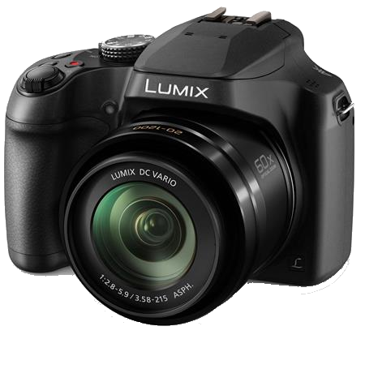

GEAR
the tools I use, and where I got them.
My camera, the Panasonic Lumix FZ80
Buy it @ adorama.com
This is a great camera for a beginner, like myself. The 60x optical zoom is how I get most of my superzoom shots of the moon, and of birds. The app on my phone makes it really easy to transfer files, which is convient when I want to share images but don't have my computer around. The overall image quality isn't fantastic, you definitely get what you pay for. Another spot that is lacking is the manual mode. For whatever reason, the maximum shutter speed you can set on it is 4 seconds, if you want longer you have to use the Artistic Nightscape mode, which lets you take up to 60 second exposures, but with less control over the apeture size and ISO. The camera body does feel solid and nicely built for being $300. On that note this is not a heavy camera or a large camera. The bag mine came with isn't huge, but has room to fit my camera and most of it's accessories. Pretty much the only other sore point for me is the fact that there is no AUX input for an external mic or other accessories. This makes it hard to use to record video, which is quite a shame, especially because the camera takes great video. This mini-review has only scratched the surface of the camera, and my thoughts and opinions about it. Feel free to contact me to if you want to know more about it!